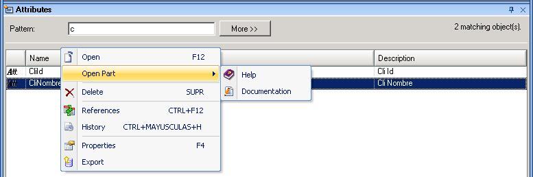
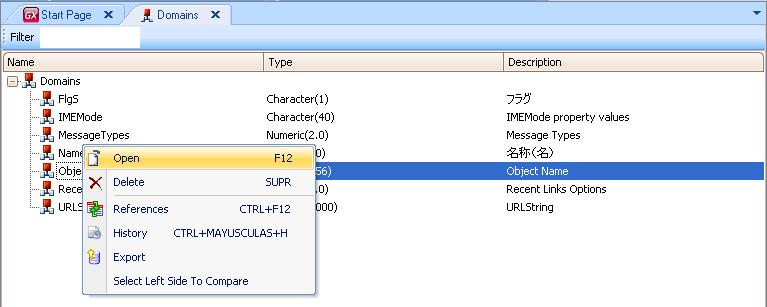

All the Attributes and Domains in a Knowledge Base, can have its own Help information and Documentation like any other object. The question is .. How can I open and edit the Help and Documentation for attributes and domains? In both cases they are opened with the context menu options Open and Open Part when right clicking over an attribute or a domain. For Attributes, this contextual menu can be opened right clicking over an attribute name in the Work With Attributes toolbox  In case of Domains, the menu is displayed when right clicking over a domain Name in the GeneXus Domains toolbox  |